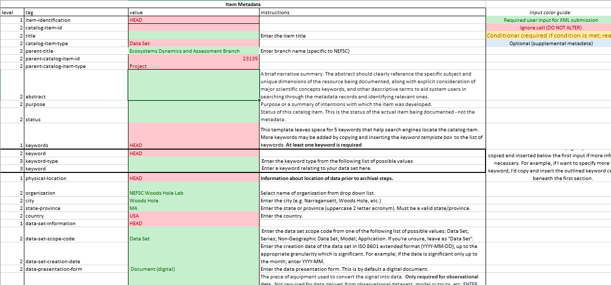
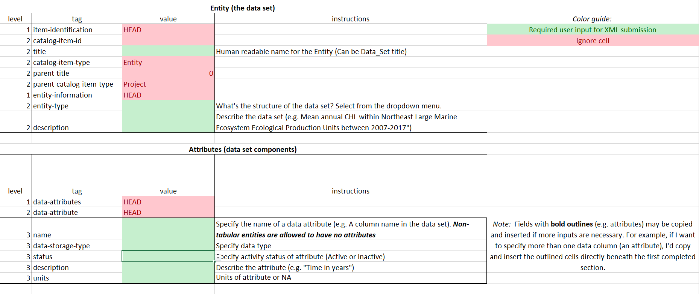

Using the InPort package
HowToUse.Rmdlibrary(inportxml)
The process of creating xml files for direct upload into InPort is a several step process
- obtain the xlsx template file
- complete the template file
- use the package to create xml file(s)
- upload to InPort
Obtain the xlsx template
The package is shipped with the default template file (set up for the NEFSC). This file needs to be copied to your working directory in order for you to edit it.
The file will be called Master_Template.xlsx
Complete the template file
The template file is color coded (see below). There are instructions built into the file to help in completion. Please read them.
- Sections in RED should not be edited
- Sections in GREEN must be completed to achive 100% PARR (Public Access to Research Results) compliance.
- Sections in ORANGE are conditional on GREEN entries.
- Sections in BLUE are optional

There are three worksheet in the file. Users will need to fill out the first and second worksheets titled “Data_Set” and “Entity” respectively. The worksheet titled “Var_List” should be ignored. This contains values used in the other worksheets’ drop down menus.

For example, suppose the data set is “Concentration of chlorophyll a derived from ocean color remote sensing”. Metadata entered in the “Data-Set” worksheet would include general metadata such as:
- A description of data
- Spatial domain of collection
- keywords describing data
- affiliated organization/center
- Person to contact
- etc
An Entity is considered a child item of the data set. This is where any attributes associated with the entity are entered. These attributes are entered on the “Entity” worksheet. For example, an entity of the above mentioned data set would be:
- concentration of Chrlorophyll a time series
its attributes would be:
- ocean color source
- mean
- median
- standard deviation
- latitude and longitude of grid cells
Another entity of the data set could be chlorophyl a anomolies
Both entities are children of the data set.
The color coding in the “Entity” worksheet is the same as in the Data_Set worksheet.

Once completed save the Master file to whatever makes sense to you. Let’s call it “myData.xlsx”
Use the package to create xml file(s)
This is the easy step. Simply type the following command:
createInPortXML(inFile = "mydata.xlsx",outPath = /path/to/where/want/output/saved, outFile = "filename.xml")
This will create two xml files and save them in outPath with the names master_filename.xml and entity_filename.xml
For detailed help please type:
?createInPortXMLUpload to InPort
The final step involves uploading the two xml files into InPort. The following provides steps for uploading a new record to the Ecosystem Dynamics and Assessment Branch (EDAB).
- Log in to InPort (use VPN if not inside network)
- Navigate to appropriate science center. For example NEFSC
- Navitage to Branch/ parent folder under which you’d like to add a record and click the name in the column on the right hand side of the page (for example EDAB )
- Note the ID number of this record. For EDAB the ID is 23135.
- Edit the master_xxx.xml file and add this ID number between the
<parent-catalog-item-id>tags. For example<parent-catalog-item-id> 23135 </parent-catalog-item-id> - Select Upload InPort XML from the Item drop down menu
- Select Choose File button , navigate to master_xxx.xml and click Load Metadata
- You will be presented with and XML Loader Report. Print this report since any warnings may need to be addressed.
- Click the View Catalog Item in InPort button.
- Note the ID of the the catalog item that you just created.
- Edit the entity_xxx.xml file and add this ID number between the
<parent-catalog-item-id>tags. For example<parent-catalog-item-id> catalogID </parent-catalog-item-id> - Under this new record select ** Add Child Item From File **.
- Select Choose File button , navigate to entity_xxx.xml and click Create
- View the record and note Rubric score (see section)
- At some point you will need to publish the record. It’s current state will be a draft.
Check Rubric Score
View the uploaded catalog and find out the Rubric score (%age). Find out which fields are missing and send report to Andy (andrew.beet@noaa.gov) or Kim (kimberly.bastille@noaa.gov)